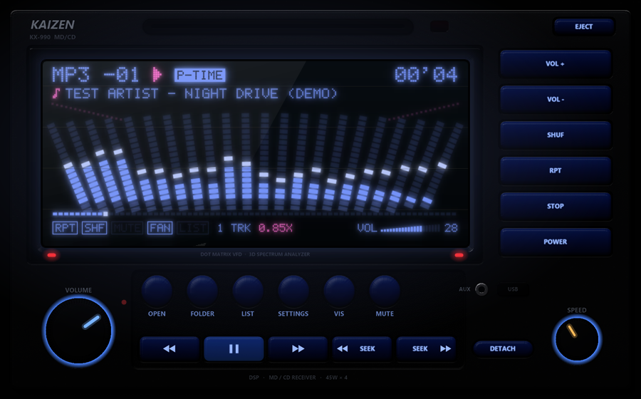

RETRO RADIOCH 01
The music player
A car-stereo music player with a glowing dot-matrix display, spectrum analyzers, P-TIME, a volume wedge and knobs you can turn. It plays your music files, SoundCloud and Spotify, with synced lyrics.
- 39 radio models
- Modern screens with album art
- Day & night lighting
- EQ, crossfade & reverb
- Internet radio
- Spotify & SoundCloud
- Synced lyrics
- JDM voice & sounds
- 8 languages